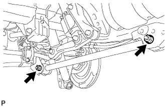

REAR LOWER ARM > INSTALLATION |
| 1. TEMPORARILY INSTALL LOWER CONTROL ARM ASSEMBLY LH |
 |
Temporarily install the lower control arm and 2 washers with the 2 bolts and 2 nuts.
| 2. STABILIZE SUSPENSION |
Install the rear wheels.
Lower the vehicle.
Press down on the vehicle several times to stabilize the suspension.
| 3. TIGHTEN LOWER CONTROL ARM ASSEMBLY LH |
Tighten the 2 nuts.
| 4. MEASURE VEHICLE HEIGHT (w/ KDSS) |
Set the tire pressure to the specified value(s) (Click here).
Bounce the vehicle to stabilize the suspension.
 |
Measure the distance from the ground to the top of the bumper and calculate the difference in the vehicle height between left and right. Perform this procedure for both the front and rear wheels.
| 5. CLOSE STABILIZER CONTROL WITH ACCUMULATOR HOUSING SHUTTER VALVE (w/ KDSS) |
Using a 5 mm hexagon socket wrench, tighten the lower and upper chamber shutter valves of the stabilizer control with accumulator housing.
| 6. INSTALL STABILIZER CONTROL VALVE PROTECTOR (w/ KDSS) |
 |
Install the valve protector with the 3 bolts.
Attach the clamp, and connect the connector to the valve protector.